Pokemon cards collection Basics and tips
How to start collecting
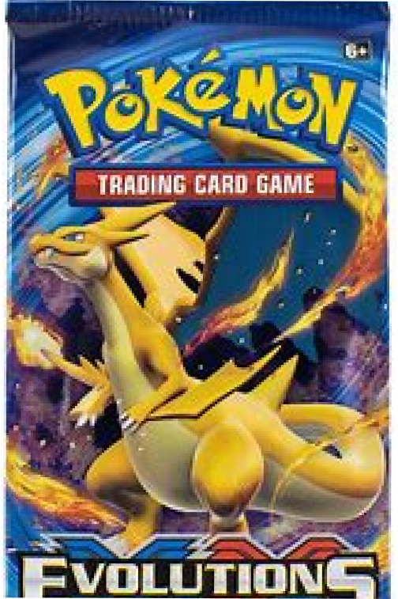 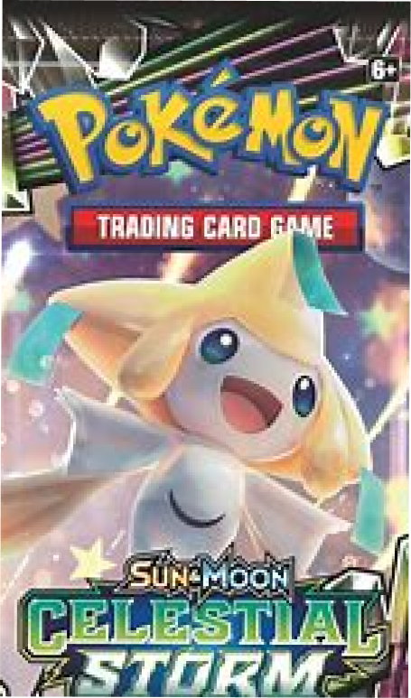 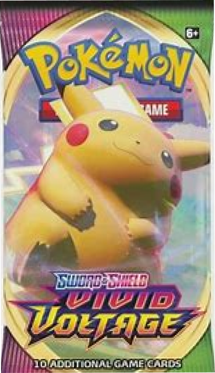pokemon cards can be found in pokemon card packs,each pack has a different price, and they have different cards.when buying packs there are many different sets of packs, for example:evolving skies,sword shields and more.Each pack has its price,for example, when buying a 100$ pack and a 5$ pokemon cards pack,theres a higher chance that there can be better cards at the 100$ pack
Card information
Each card has different a different value,some cards are more valuable than others.for example there are some cards that are rarer than others, the cards in a pokemon card set that are rarer than the others,have a bigger value
How to find out out when a pokemon card was produced
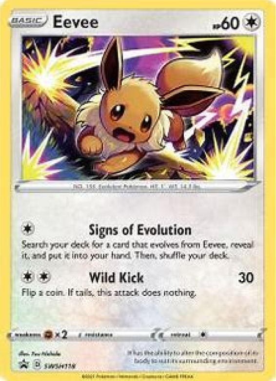Pokemon tins
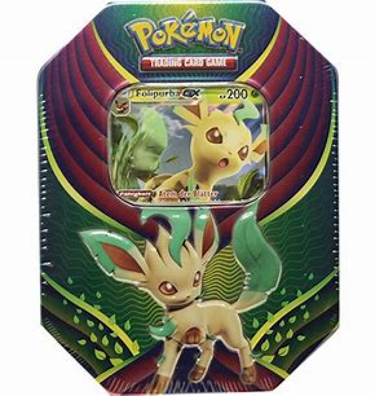These tin boxes contain many things like an exclusive card that depends on what tin box you are buying,many times they can contain stickers,and other things. When buying a pokemon tin boxes the tin box can have from 4-5 or maybe less.
Card grading
Grading basically describes,how good your card is in condition,and many other things,for example condition,the centering of the card,and other things.Grading can be done ny sending your pokemon cards to special companies that are doing that thing.The higher the grading of the card,the higher the value it has.
Pokemon value tips and tricks
Most of the time many older edition cards,appear to have more value than modern cards.This is happening cause many cards arent produced anymore but you can still get them,but it will cost more than the original price of the box-tin box
This is a first edition charizard card,this card does allot of value,cause not many people have it anymore,this card can be sold,for thousands if it has got a high garding.
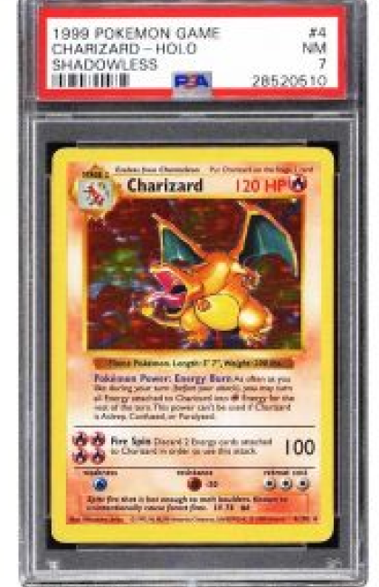Card information
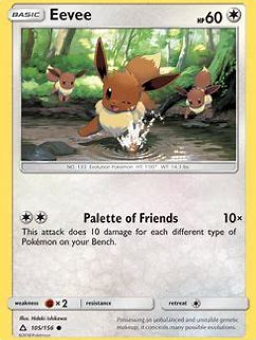 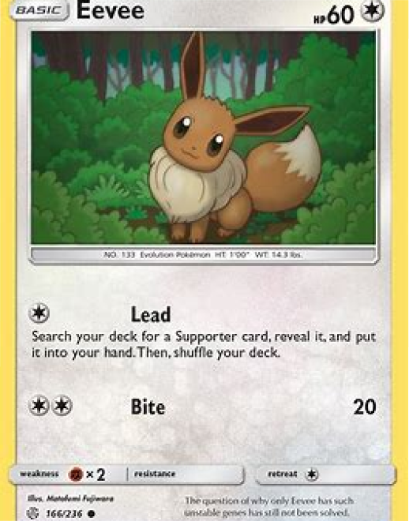Many cards can be found in many different sets,for example a pokemon card can be produced in 2021 and 2022,but it has different edition,this means that a card can be found,for example in 2021 editions,2016,2022 and many other editions.
Holo cards
Mnay cards have a holo edition,a holo edition card,is a card that has like a shining effect on it,those cards are worth more than the original card.
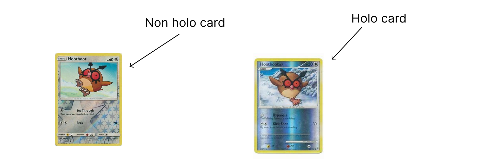Rainbow Cards
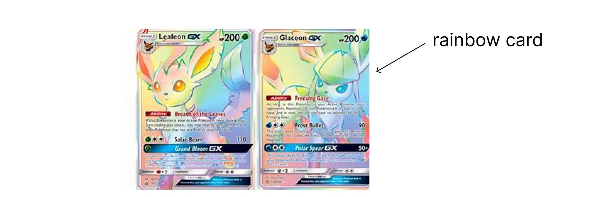Rainbow cards are a version of a normal card,but even rarer these type of cards can be found in newer pokemon packs. These are have more value and are harder to find
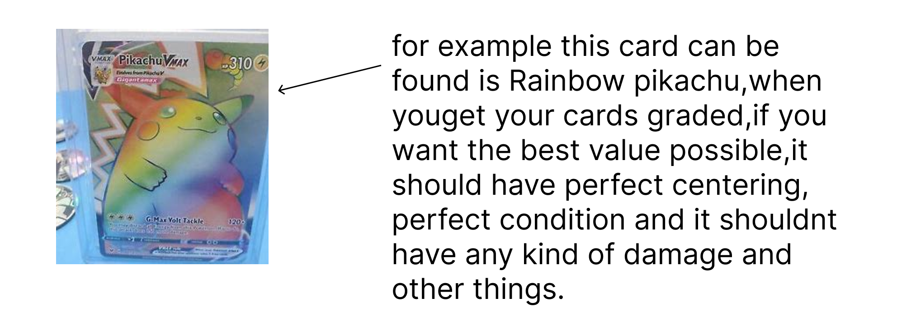